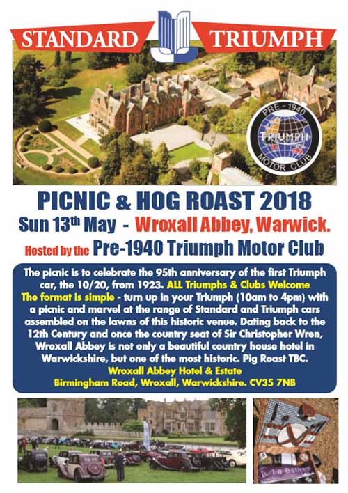

Celebrate the 95th Anniversary of the First Triumph Car
Standard Triumph Forum picnic, Sunday 13th May
· 25th April 2018
We have been invited to take part in a picnic to celebrate of the 95th anniversary of the first Triumph car, the 10/20, from 1923. All Triumphs and clubs will be welcome, and the format is very simple – just turn up in your Triumph (10 AM to 4 PM) with a picnic and, in the words of the advert: marvel at the range of Standard and Triumph cars assembled on the lawns of this historic venue.
Wroxall Abbey in Warwickshire is not only a beautiful country house hotel, but dates back to the 12th Century and once the country seat of Sir Christopher Wren.
Click the poster image on the right to download a copy as a PDF.
The address of the abbey is:
Wroxall Abbey Hotel and Estate, Birmingham Road, Wroxall, Warwickshire, CV35 7NB.